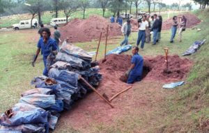
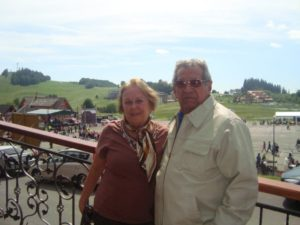
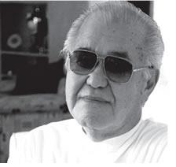
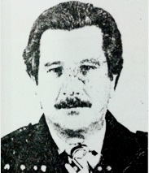

Menu de navegação
Conteúdo principal
Rodapé
menu
História da
Ditadura
Expandir submenu
Origens do golpe
Períodos da ditadura
Corrupção
Futebol
Militares que disseram NÃO
Civis que disseram SIM
Biografias da ditadura
Biografias da resistência
Contexto
internacional
Expandir submenu
Capitalismo ou comunismo?
América Latina em transe
A Repressão
Expandir submenu
A Repressão
Resistências
Expandir submenu
Panorama da resistência
Partidos políticos
Imprensa alternativa
Indígenas
Igreja
Movimentos Negros
Movimentos de bairro
Mulheres
LGBT
Operários
Trabalhadores rurais
Estudantes
Grupos da luta armada
Educação e
ditadura
Expandir submenu
A educação brasileira antes de 1964
Educação básica
Universidades
Livros sob censura
Arte e
cultura
Expandir submenu
Panorama
Artes plásticas
Cinema
Música
Rádio
Teatro
Televisão
Literatura
Anistia e
Abertura
Expandir submenu
Abertura lenta e anistia parcial
Comissão nacional
da verdade
Expandir submenu
O que são Comissões da Verdade
CNV no Brasil
Comissões da Verdade locais
Experiências internacionais
As recomendações da CNV
Justiça de
Transição
Expandir submenu
O que é Justiça de Transição
Justiça de Transição no Brasil
Violências
de estado
Expandir submenu
Desmilitarização e reforma das polícias
Combate à Tortura
Dignificação do Sistema Prisional
Identidades e
resistências
Expandir submenu
CNV e indígenas
CNV e mulheres
CNV e LGBT
CNV e as lutas por terras
Apoio ao
educador
Expandir submenu
Aos educadores
Sequências Didáticas
Protagonismo dos alunos
Inclua sua proposta
Biografias
da
ditadura
Selecione o biografado
Selecione o biografado
Riscala Corbaje
Luiz Mário Correia Lima
Francisco Moacir Méier Fontenelle
Abeylard Orsini
Alcides Cintra Bueno Filho
Audir Santos Maciel
Valdir Coelho
Paulo Bonchristiano
Rubens Tucunduva
Pedro Seelig
Lourival Gaeta
Paulo Malhães
Marival Chaves do Canto
Romeu Tuma
David dos Santos Araújo
Alcides Singillo
Humberto de Souza Mello
Augusto Rademaker Grünewald
Carlos Simas
Mário David Andreazza
Octávio Gonçalves Moreira Junior
Albert Hening Boilesen
Dulene Aleixo Garcez dos Reis
José Maria Marin
Armando Souza Dias
Magno José Borges
Aquino de Farias Reis
José Carlos Pinheiro
José Antônio Nogueira Belham
Dalmar Caribé
Murilo Augusto de Assis Toledo
João Bosco Nacif da Silva
Freddie Perdigão
Milton Tavares
Isaac Abramovitch
Maurício Lopes Lima
Carlos Alberto Augusto
Homero César Machado
Harry Shibata
João Figueiredo
Ernesto Geisel
Emílio Garrastazu Médici
Costa e Silva
Delfim Netto
José Sarney
Sebastião Rodrigues de Moura (Major Curió)
Aparecido Calandra
Dirceu Gravina
Carlos Brilhante Ustra (Major Tibiriçá)
Sérgio Paranhos Fleury
Abeylard Orsini
Albert Hening Boilesen

Alcides Cintra Bueno Filho
Alcides Singillo
Aparecido Calandra

Aquino de Farias Reis
Armando Souza Dias
Audir Santos Maciel
Augusto Rademaker Grünewald
Carlos Alberto Augusto
Carlos Brilhante Ustra (Major Tibiriçá)
Carlos Simas
Costa e Silva
Dalmar Caribé
David dos Santos Araújo
Delfim Netto
Dirceu Gravina
Dulene Aleixo Garcez dos Reis
Emílio Garrastazu Médici
Ernesto Geisel
Francisco Moacir Méier Fontenelle
Freddie Perdigão

Harry Shibata
Homero César Machado
Humberto de Souza Mello
Isaac Abramovitch
João Bosco Nacif da Silva
João Figueiredo
José Antônio Nogueira Belham
José Carlos Pinheiro
José Maria Marin
José Sarney

Lourival Gaeta
Luiz Mário Correia Lima
Magno José Borges
Mário David Andreazza
Marival Chaves do Canto
Maurício Lopes Lima
Milton Tavares
Murilo Augusto de Assis Toledo
Octávio Gonçalves Moreira Junior
Paulo Bonchristiano
Paulo Malhães
Pedro Seelig
Riscala Corbaje
Romeu Tuma
Rubens Tucunduva
Sebastião Rodrigues de Moura (Major Curió)
Sérgio Paranhos Fleury
Valdir Coelho

 Albert Hening Boilesen
Albert Hening Boilesen Alcides Singillo
Alcides Singillo Dalmar Caribé
Dalmar Caribé Dirceu Gravina
Dirceu Gravina João Bosco Nacif da Silva
João Bosco Nacif da Silva Sebastião Rodrigues de Moura (Major Curió)
Sebastião Rodrigues de Moura (Major Curió)